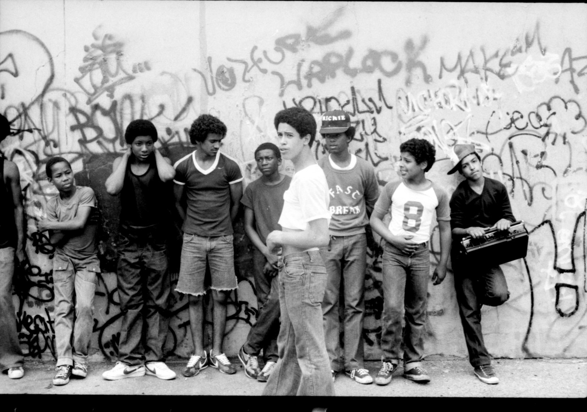
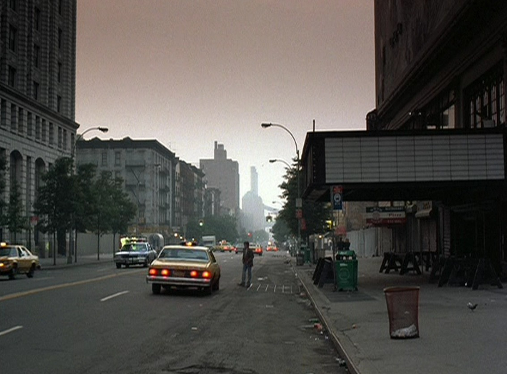
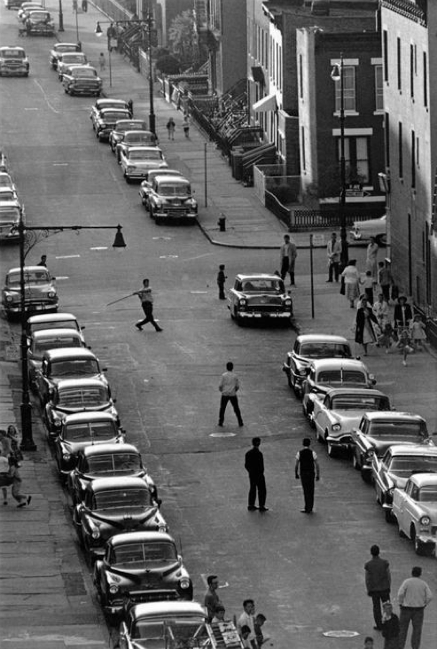
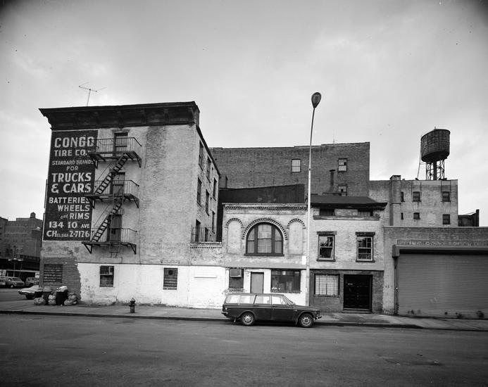
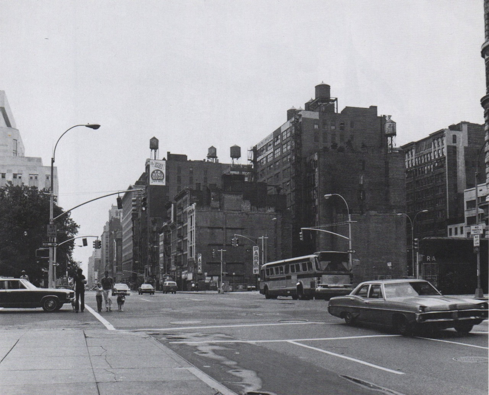
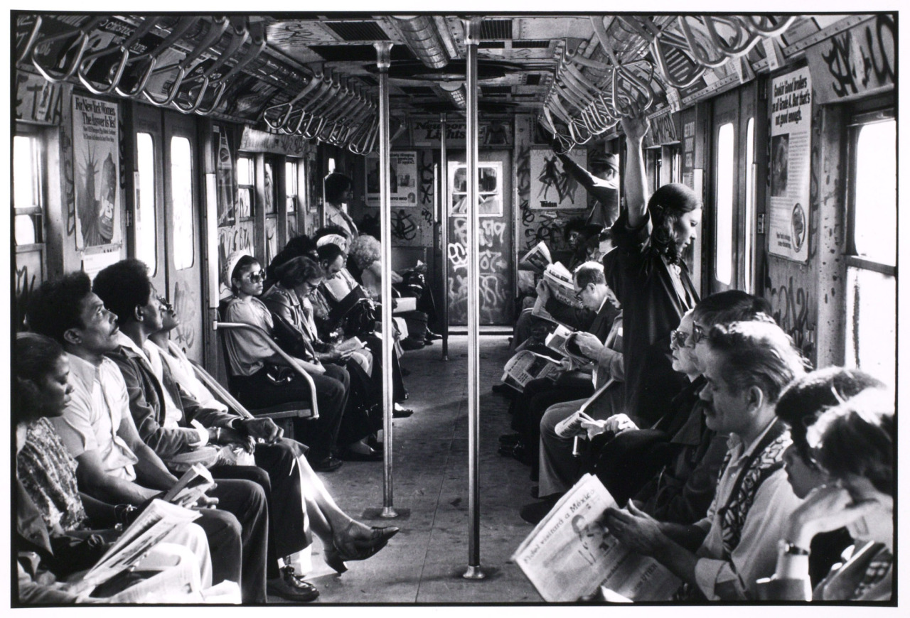

42nd and 6th, 1978.

42nd and 6th, 1978.

Checker cabs at 6th Ave and 45th Street, 1978.
The 1977 blackout, seen from the Hudson River.
Zephyr and Revolt pieces, side by side.

Blurry but awesome Zephyr and Revolt tags.

Cope, saying hi to Mom and Jesus.

New York City, 1981
Christopher Morris

A water shortage in New York has these three young women washing their clothes at one of the lakes in Central Park.
New York, 1949
They might as well have washed their clothes in medical waste.

Rock Steady Crew, circa 1980.

Old Fulton Street, 1975.
Brooklyn, 1970s. Broadway between Berry Street and Bedford Avenue.

Upper West Side, 1960s. Pretty sure this is the East side of Broadway somewhere below 79th Street.

Trolley car, 1924, near Williamsburg Bridge

Alphabet City, 1980.

The Palladium, or what was left of it. 1988.

Julian Billiards in 1991, a few years before it closed. Right next to the old Palladium on 14th Street.

Bruce Davidson Playing Stickball in the Street, Seventeenth Street and Eighth Avenue, Brooklyn, New York, from the “Brooklyn Gang” Series 1959

Playground in the East Village, New York City, 1981
Harlem, 1970. Stylin’

463-461 West 18th Street
New York City, ca. 1975
Edmond V. Gillon

Peace demonstration in Central Park, 1970.

NYC’s best roommates.
Biblo & Tannen Bookstore, 1940. 9th St. and 4th Ave.

1524 Amsterdam Ave, up around City College. 1971.
1980s Beastie Boys in Times Square
(via http://fineprintnyc.com/blog/evolution-of-new-york-city-part-18-1980-1985)

5 train resting in the 207th Street yards. Bombed.

Columbus Ave, between 85th and 86th Streets, 1982. Sure as hell doesn’t look like this anymore.

Alfred Stieglitz’s “Old and New New York”, 1910. Park Avenue here is still lined with free-standing mansions and townhouses, yet the under-construction Vanderbilt Hotel looms in the distance between East 33rd and 34th Streets.

Taxis taxis taxis. 1970 on 5th Ave, near 48th St.

“Best porn in New York!”, 1986 Times Square.

Waverly Place, 1970.
Smith St., Brooklyn, 1960.

Times Square, 1968.

Oyster Bar in Grand Central Station, 1974.

5th Ave and 23rd St, 1974.

Feet of the Statue of Liberty arrive on Liberty Island 1885

Bleecker and Christopher, 1975.

Flatbush, 1979.

Police Work, NYC, 1979.
Photo by Leonard Freed

52nd Street in 1948. Jazz, baby.

2 train, 1979.

A rainy NYC day, 1971. (Anyone recognize where this is, exactly?)

Bad-ass chicks on the 2 train, 1979.

Central Park, 1969. Don’t worry, honey, I’ll keep you safe from those pants.